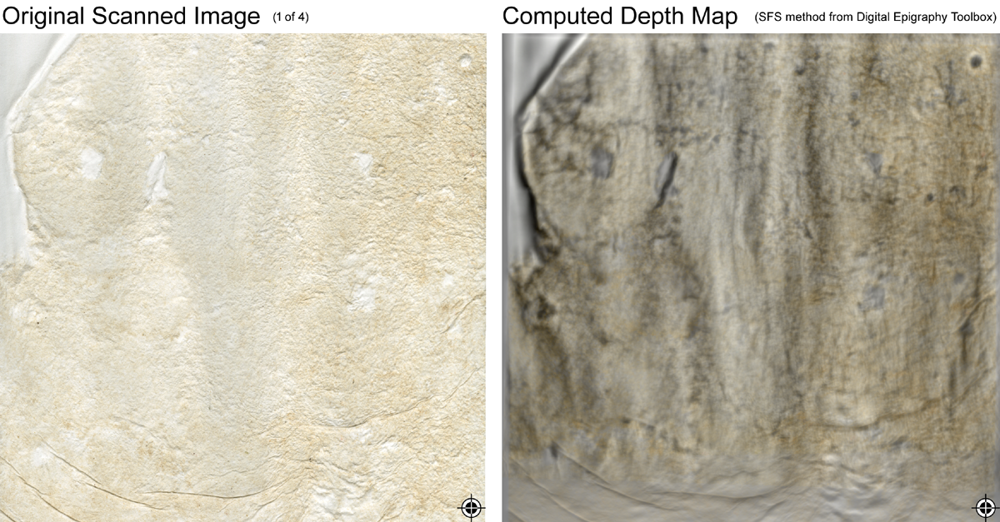
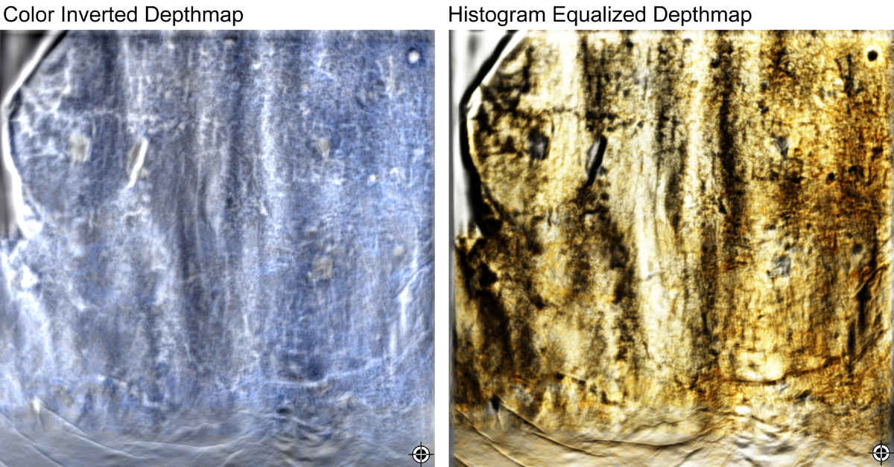
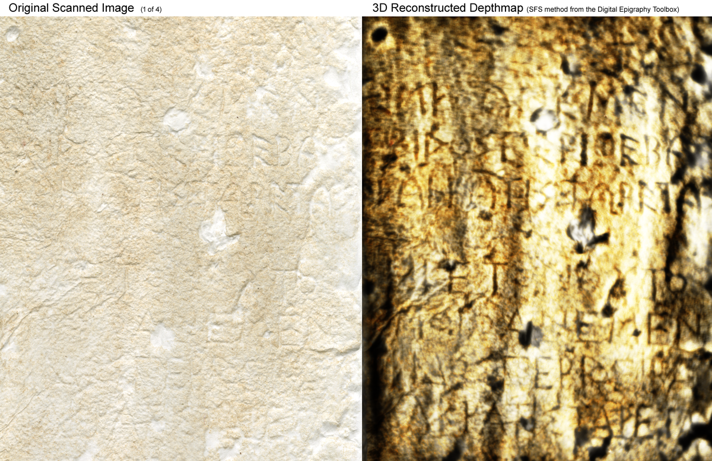

GAINESVILLE, Fla.
June 3, 2015.
An interdisciplinary team from the Digital Epigraphy and Archaeology group at the University of Florida and the Aleshire Center for the Study of Greek Epigraphy at the University of California, Berkeley digitized in 3D squeezes (paper casts) of inscriptions from the Aleshire collection. The goal of this pilot project was to stretch the shape-from-shading (SFS) method1 of the Digital Epigraphy Toolbox2 to its limits by testing it to severely weathered inscriptions from Thebes and Sifnos.
SFS has been successfully used in the past by our group for 3D digitization of inscriptions from the Monumentum Ancyranum (in collaboration with Cornell University), seals and medals (in collaboration with the UK National Archives), paper embossments from Abraham Lincoln's letters (in collaboration with the Library of Congress and Cornell University) and most recently inscriptions from Delphi, Thasos, and Delos (in collaboration with the University of Lyon 2 and the French School of Athens).
The question to be answered in this pilot project was: Can SFS assist epigraphists in reading severely weathered inscriptions by intensifying the inscribed symbols or even reveal new fragments?
To find the answer to this question, Prof. Nikolaos Papazarkadas and John Lanier (UC Berkeley) selected three sample squeezes with hard-to-read inscribed fragments and scanned them, using a regular flatbed scanner (Expression 10000XL by EPSON). Each fragment was scanned four times by rotating the squeeze 90 degrees each time, according to the SFS process1. An example of the obtained results is shown in the figures below.


By comparing the original scanned image (Fig.1 left) with the depthmap of the 3D reconstructed inscription shown in the figures above, it is evident that the 3D digital model is significantly richer in information. According to Prof. Barmpoutis (University of Florida) "this is an exemplar case that demonstrates the capabilities of 3D digitized models compared to the original 2D images. It is truly remarkable how much more inscribed details can be seen in the depthmap computed by the SFS method, using just a conventional office paper scanner. When I first saw the scanned squeeze I was convinced that there was no inscription survived in this fragment, but when I saw the reconstruction results I could clearly recognize several letters despite the fact that I am not a professional epigraphist myself."

According to professional epigraphists from UC Berkeley who inspected the reconstructed data "the biggest difference is that it takes several hours in the museum in order to read what it can be read, while with the digitized squeeze it can be done conveniently at home". They also noted that "the difference between SFS and RTI is obviously the cost" and "what was most impressive was the depthtmap, which is very useful and can be used for publication."
Below you can find another example of an embedded 3D digitized squeeze from the Aleshire collection. Use your touch screen or mouse to interact with the exhibit. You can rotate, zoom, relight and view in full screen information about this inscription.
The results from this pilot project will be presented in detail by Prof. Eleni Bozia (University of Florida) and Prof. Nikolaos Papazarkadas (UC Berkeley) at the "Texte Messen - Messungen Interpretieren" Workshop organized by the Universität Freiburg, Germany on July 23-25, 2015. All 3D reconstructed models of the sample squeezes from this pilot study can be found at the following link: www.digitalepigraphy.org/collection/aleshire/
To learn more about how to use our open-access tools to digitize, analyze, and disseminate your own collection feel free to contact us or visit the web-site of the Digital Epigraphy and Archaeology project.
The DEA editorial team
References:
1. A. Barmpoutis, E. Bozia, R. S. Wagman, "A novel framework for 3D reconstruction and analysis of ancient inscriptions", Journal of Machine Vision and Applications
2010, Vol. 21(6), pp. 989-998. PDF
2. Digital Epigraphy Toolbox, www.digitalepigraphy.org/toolbox.
Funded in part by the NEH grant HD-51214-11.
{kind=link}
{kind=link}
{kind=link}